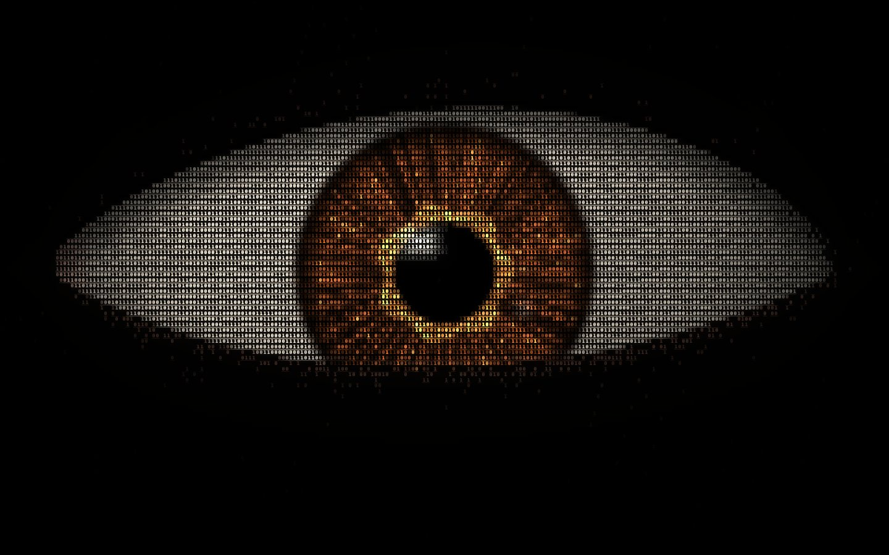

IRIS
Kodun içinden bir bakış.
İmleç takibi Duraklatıldı
Bakışını yönlendir. Takibi kilitle, kendi yoluna baksın.
Göze odaklanıp ok tuşlarıyla bakışı yönlendirebilirsin.
Bu cihazda WebGL açılamadı; gözün durağan hâli gösteriliyor. Bakış ve takip kullanılamıyor.